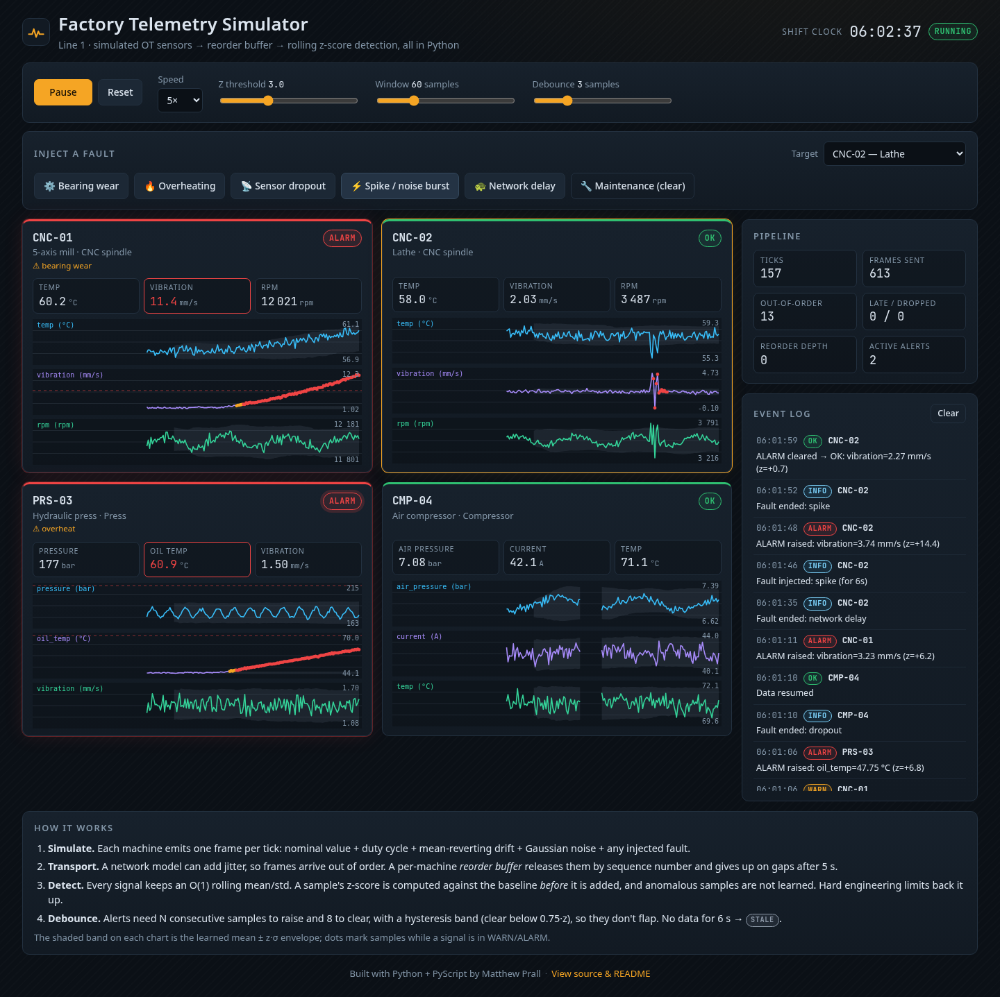

Open the Factory Telemetry Simulator (opens in a new tab)Featured
Factory Telemetry Simulator
Python runs in the browser, via PyScript, and simulates four factory machines streaming sensor data. A reorder buffer puts out-of-order messages back in sequence, and a rolling z-score detector with hysteresis raises alarms. You can inject bearing wear, overheating, sensor dropout, a noise spike, or network delay, and then clear the fault.
Open the simulator (opens in a new tab) Source for Factory Telemetry Simulator on GitHub (opens in a new tab)